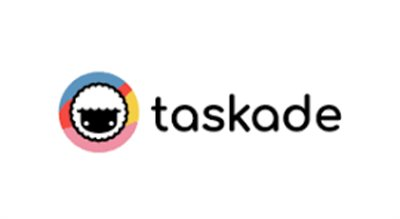
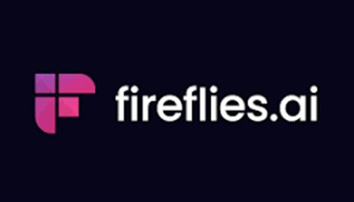
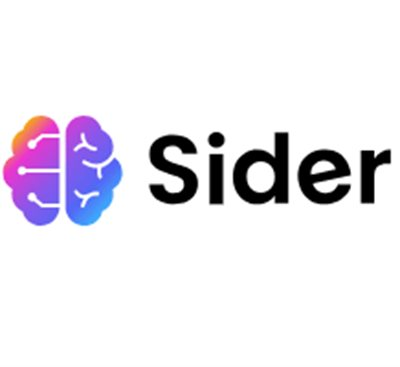
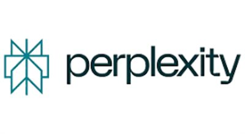
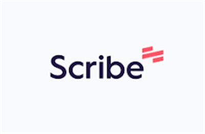
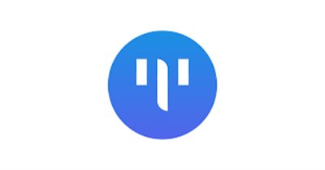

Best AI Productivity Tools 2026 – Save Hours Every Day
The best AI productivity tools in 2026 can transform how you work, automate repetitive tasks, and save you hours every single week. From AI workflow automation and meeting transcription to document analysis and smart task management — this list covers the top productivity tools that are actually worth your time. All reviewed and curated by WebTools.
i10x
FreemiumAI-powered business automation platform that combines task automation, analytics, and process optimization to help teams scale without hiring. Ideal for startups and managers.
Try i10x →
Taskade
FreemiumAll-in-one workspace combining task management, AI agents, notes, and mind maps. Automates repetitive workflows and supports real-time team collaboration.
Try Taskade →
Fireflies AI
FreemiumAI meeting assistant that records, transcribes, and summarizes calls. Search past conversations and extract key action items. Essential for remote teams.
Try Fireflies →
Sider AI
FreemiumBrowser AI assistant bringing GPT, Claude, and Gemini to every webpage. Summarize articles, analyze PDFs, translate, and research multiple sources at once.
Try Sider AI →
Perplexity AI
FreemiumAI-powered search engine that delivers direct, sourced answers instead of just links. Speeds up research and decision-making for professionals and students.
Try Perplexity →
Scribe
FreemiumAutomatically turns your computer actions into step-by-step guides with screenshots. Create SOPs and training documentation in seconds, not hours.
Try Scribe →
TinyWow
Free100+ free online file tools — PDF editing, image compression, video conversion — all in one place. No registration required. Perfect for everyday tasks.
Try TinyWow →Mind Studio
FreemiumNo-code platform for building custom AI agents trained on your own data. Automates business workflows and processes without any coding knowledge required.
Try Mind Studio →
Photopea
FreemiumFree online image editor that supports PSD files and Photoshop-level tools directly in the browser. The best free alternative to professional design software.
Try Photopea →Gyld
PaidAutomation platform using AI agents to manage emails, CRM tasks, and internal workflows. Connects your tools to eliminate manual, repetitive work across your business.
Try Gyld →Frequently Asked Questions – AI Productivity Tools
What is the best AI productivity tool in 2026?
Taskade and i10x are among the top AI productivity tools in 2026. Taskade excels at team collaboration and AI agents, while i10x focuses on business process automation and scaling operations efficiently.
Which AI tool transcribes meetings automatically?
Fireflies AI is the leading meeting transcription tool. It automatically records, transcribes, and summarizes online meetings, and lets you search past conversations for key information.
Are there free AI productivity tools?
Yes — TinyWow, Goblin Tools, and Photopea are completely free. Taskade, Fireflies AI, Sider AI, and Perplexity all offer robust free tiers with unlimited basic usage.